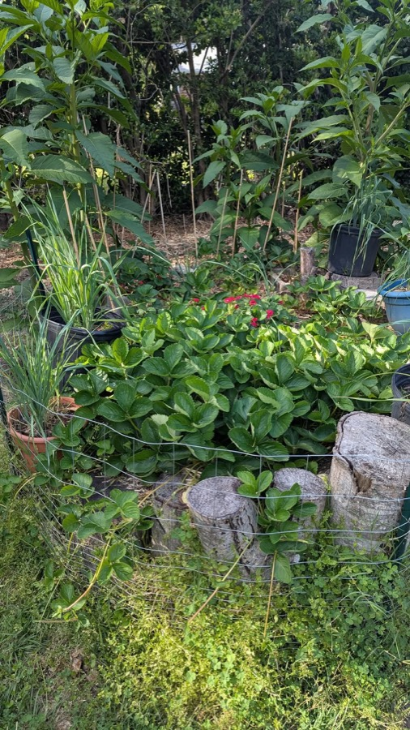
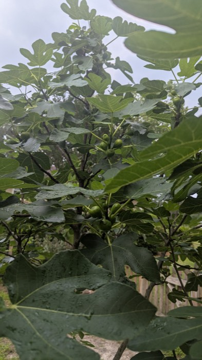
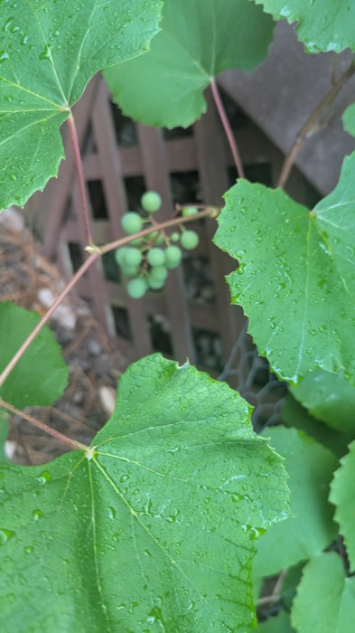
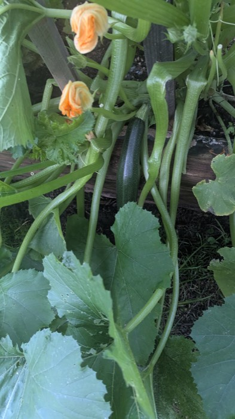
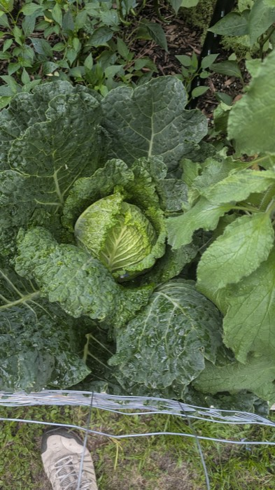
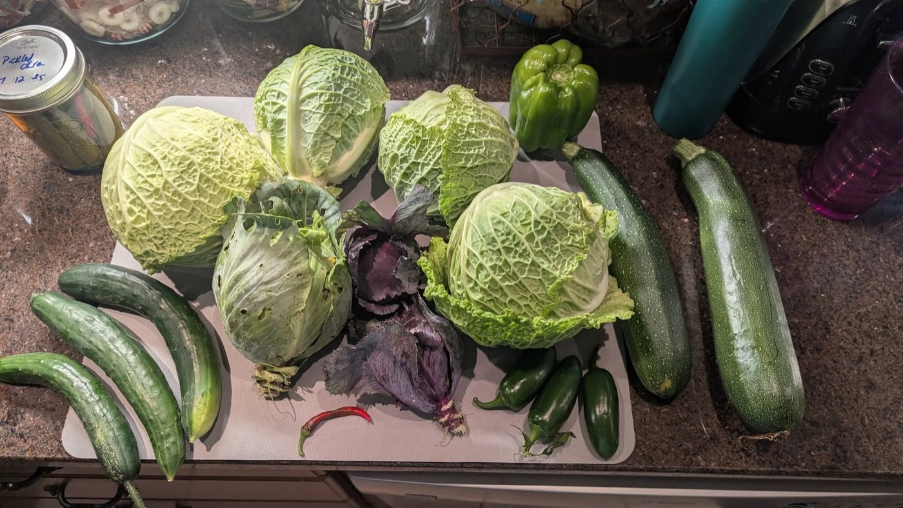

farm · classroom · small-batch shop
One acre of organic ground, foraging trails we teach on foot, and jars we put up ourselves.
our acre
That food, medicine, and teaching all come from the same soil. Everything here is grown organic, gathered by hand, and put up the way it's been done for generations, no shortcuts, no filler.
We're two women running a working farm, not a hobby garden, come see what that actually looks like season to season.

what we do
Vegetables, herbs, and flowers grown without synthetic sprays or shortcuts, tended the way that actually works over the way that's fast.
Walk the acre and see how a working organic farm actually runs, day to day, season to season, gate always open by appointment.
Guided walks and hands-on classes on what's safe to forage, how to identify it, and what to actually do with it once it's picked.
what we grow, this season





the shop
We're putting up teas, tinctures, jellies, and jams this season, from what we grow and forage right here on the acre.
friends of the acre